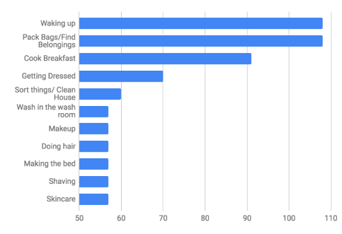
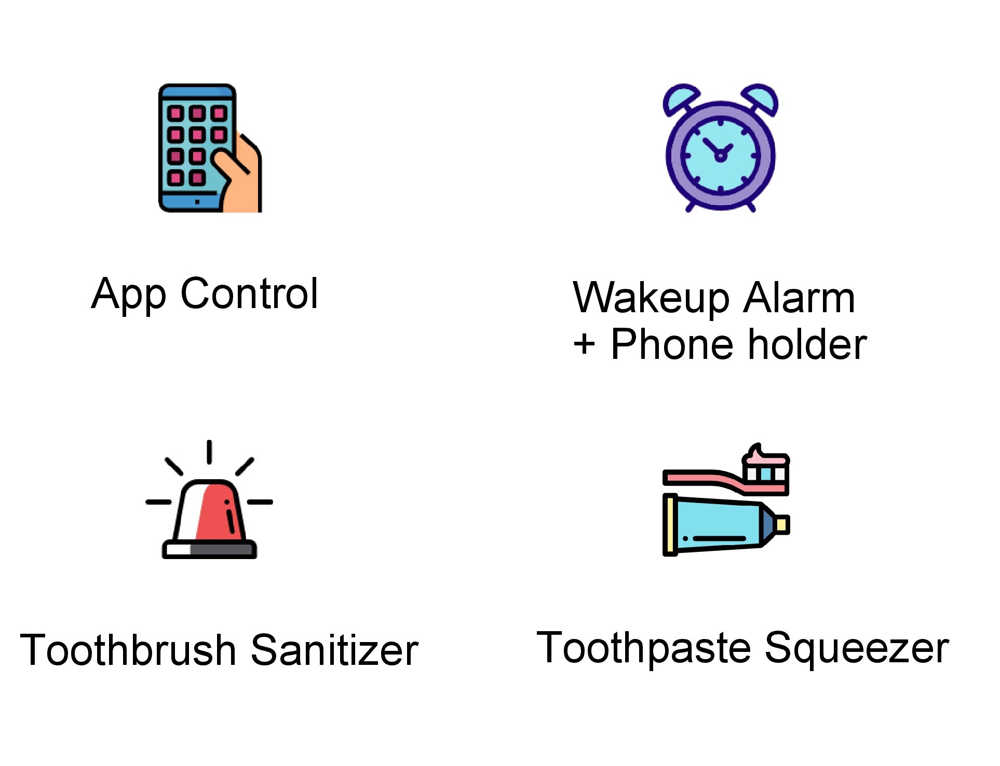
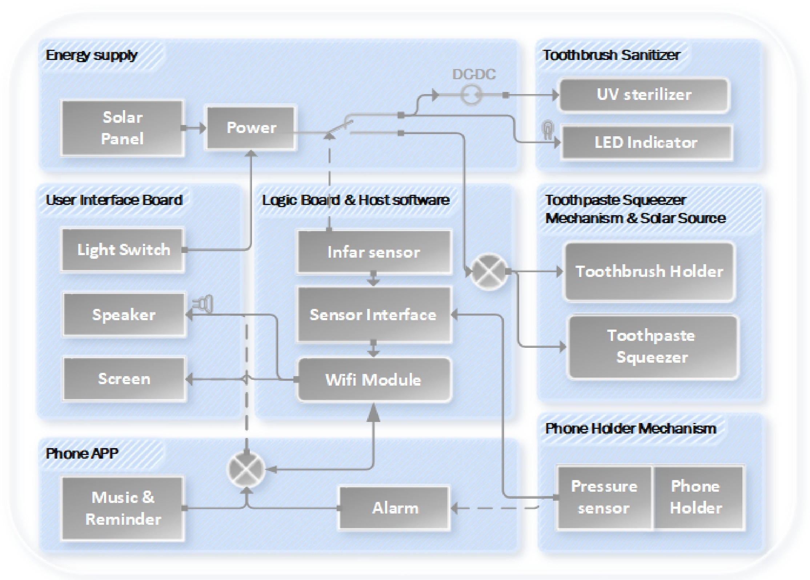
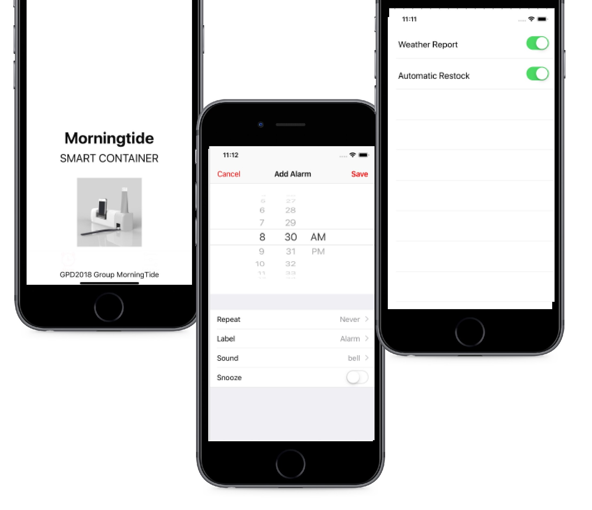
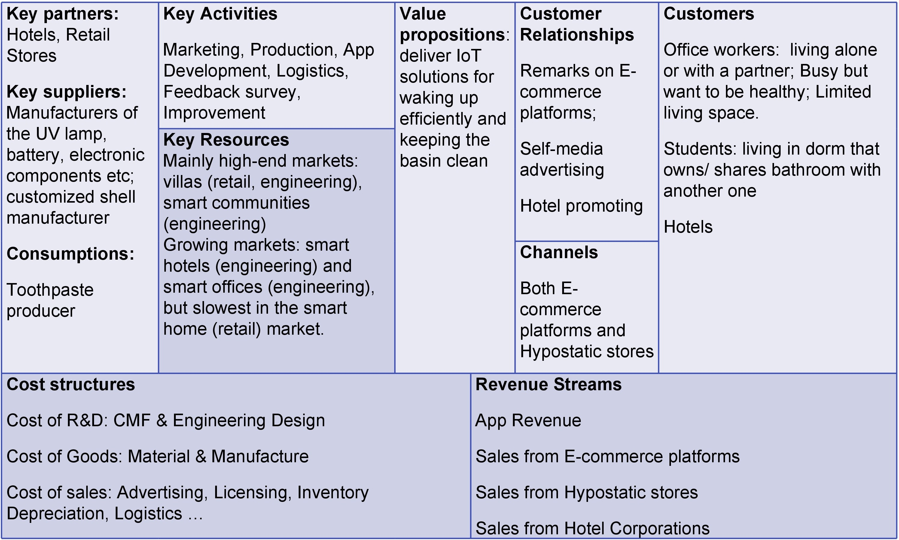

Overview
Global Product Development (GPD) is a joint-university, project-based course that practices interdisciplinary teaching approach among three institutions in Seoul, Beijing and Hong Kong. I was in a multicultural and multidisciplinary student teams to seek for and define a global user-centered design problem, iterate through design solutions, and build the final functional prototype.
In the course, our team wanted to create a solution to make people's morning routines better. After our preliminary and secondary market research, we found that a lot of people are finding difficulties waking up in the morning, and they think their current morning routines are only having negative effects to the rest of their days. Targeting mainly on students and office workers, we came up with a IoT container that provides an all-in-one solution for a person's morning routine - a toothbrush holder, toothbrush santisizer, an bathroom organizer, a phone holder connected with an alarm app.
My role
- Prototype application developer
- Poster designer
- Slides designer
- Market researcher
- Presenter for final project demonstration
Process
1. Market research
Before we had an idea on what we wanted to build, we conducted two rounds of market research to identify target customers, market size and global aspects of the potential market segments we are facing. We also wanted to make clear the customers’ pain points and their translation into the customer requirements. Moreover, since we are building a global product, we would like to consider it in different countries’ contexts.
From the primary research conducted, we identified common problem scenarios - messy bathrooms, over-abundance of female and male bathroom products, and general tiredness in the morning. We conducted both desktop research, questionnaires and interviews to get factual data and examine our current assumptions.
Waking up is the hardest amongst all morning routines
we were able to find the specific reasons and pain-points surrounding these observations. It suggests that the psychological origin of this problem to be rooted in human aversion to decision making and general lack of self-discipline. When asked about why they are unable to get up, have breakfast, or organize their bathrooms people cite the abundance of choices and lack of motivation or it just being “hard”. Tasks that require conscious effort and decision making are further dulled by the lack of energy from just getting up. Alarms, sleep-reminders, and coffee are not effective solutions for this market segment.
2. Problem Definition
Scenarios
Find it hard to wake up in the morning
Always sleep through the alarm
Set up 5 alarms to make sure you won' t be late for work
Washbasin is always a mess
Always overwhelmed by the products you use in the morning
Want to put your toothbrushes and toothpaste in place and keep them clean
Target Customers
Office workers, students; Hotel customers
Objective
We want to build a better solution for waking up in the morning, an organizer to keep bathroom tidier and cleaner
3. Critical design
Key Features
CFP glassbox
Subsystems
Hardware part of the subsystem includes a toothbrush sanitizer, alarm controller, and other mechanics parts.
Toothbrush sanitizer
The toothbrush sanitizer includes a UV disinfection lamp, a far-infrared sensor to detect when the toothbrush is in place, a LED indicator light when in disinfection, and a power boost module.
Alarm controller
An alarm controller has a phone holder, a pressure sensor when the phone is in place, a Wi-Fi module to connect and send signal to phone, and a light switch.
Other Mechanics & structure
There will be other parts including a vaccuum squeezzer for the toothpaste, a toothbrush supporter, a waterproof material for casing.

App prototype
The software subsystem is a mobile app that allows user to control the alarm and set alarms or reminders. It can potentially has other entertaining features such as automatic weather forcast and daily schedule broadcast.
Business Canvas
We will mainly partner up with the hotels and retail stores to provide IoT solutions for waking up efficiently in the morning and keeping the basin clean.
Poster design